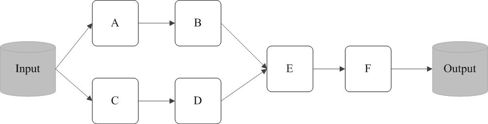

RDD设计背景
在实际应用中，存在许多迭代式算法（比如机器学习、图算法等）和交互式数据挖掘工具，这些应用场景的共同之处是，不同计算阶段之间会重用中间结果，即一个阶段的输出结果会作为下一个阶段的输入。但是，目前的MapReduce框架都是把中间结果写入到HDFS中，带来了大量的数据复制、磁盘IO和序列化开销。RDD它提供了一个抽象的数据架构，我们不必担心底层数据的分布式特性，只需将具体的应用逻辑表达为一系列转换处理，不同RDD之间的转换操作形成依赖关系，可以实现管道化，从而避免了中间结果的存储，大大降低了数据复制、磁盘IO和序列化开销。
RDD本质与操作
一个RDD就是一个分布式对象集合，本质上是一个只读的分区记录集合，每个RDD可以分成多个分区，每个分区就是一个数据集片段，并且一个RDD的不同分区可以被保存到集群中不同的节点上，从而可以在集群中的不同节点上进行并行计算。RDD提供了一种高度受限的共享内存模型，即RDD是只读的记录分区的集合，不能直接修改，只能基于稳定的物理存储中的数据集来创建RDD，或者通过在其他RDD上执行确定的转换操作（如map、join和groupBy）而创建得到新的RDD。
- “行动”（Action）： 执行计算并指定输出的形式， 行动操作（比如count、collect等）接受RDD但是返回非RDD（即输出一个值或结果）
- “转换”（Transformation）： 指定RDD之间的相互依赖关系， 转换操作（比如map、filter、groupBy、join等）接受RDD并返回RDD，
Spark用Scala语言实现了RDD的API，程序员可以通过调用API实现对RDD的各种操作。RDD典型的执行过程如下：
1. RDD读入外部数据源（或者内存中的集合）进行创建；
2. RDD经过一系列的“转换”操作，每一次都会产生不同的RDD，供给下一个“转换”使用；
3. 最后一个RDD经“行动”操作进行处理，并输出到外部数据源（或者变成Scala集合或标量）。
RDD采用了惰性调用，即在RDD的执行过程中，真正的计算发生在RDD的“行动”操作，对于“行动”之前的所有“转换”操作，Spark只是记录下“转换”操作应用的一些基础数据集以及RDD生成的轨迹，即相互之间的依赖关系，而不会触发真正的计算。

在图中，从输入中逻辑上生成A和C两个RDD，经过一系列“转换”操作，逻辑上生成了F（也是一个RDD），之所以说是逻辑上，是因为这时候计算并没有发生，Spark只是记录了RDD之间的生成和依赖关系。当F要进行输出时，也就是当F进行“行动”操作的时候，Spark才会根据RDD的依赖关系生成DAG，并从起点开始真正的计算。
例1：一个Spark的“Hello World”程序
val fileRDD = sc.textFile(“hdfs://192.168.0.103:9000/examplefile”)
val filterRDD = fileRDD.filter(_.contains(“Hello World”))
filterRDD.cache()
filterRDD.count()
这个程序的功能是读取一个HDFS文件，计算出包含字符串“Hello World”的行数。
可以看出，一个Spark应用程序，基本是基于RDD的一系列计算操作。第1行代码用于创建SparkContext对象；第2行代码从HDFS文件中读取数据创建一个RDD；第3行代码对fileRDD进行转换操作得到一个新的RDD，即filterRDD；第4行代码表示对filterRDD进行持久化，把它保存在内存或磁盘中（这里采用cache接口把数据集保存在内存中），方便后续重复使用，当数据被反复访问时（比如查询一些热点数据，或者运行迭代算法），这是非常有用的，而且通过cache()可以缓存非常大的数据集，支持跨越几十甚至上百个节点；第5行代码中的count()是一个行动操作，用于计算一个RDD集合中包含的元素个数。这个程序的执行过程如下：
- 创建这个Spark程序的执行上下文，即创建SparkContext对象；
- 从外部数据源（即HDFS文件）中读取数据创建fileRDD对象；
- 构建起fileRDD和filterRDD之间的依赖关系，形成DAG图，这时候并没有发生真正的计算，只是记录转换的轨迹；
- 执行到第5行代码时，count()是一个行动类型的操作，触发真正的计算，开始实际执行从fileRDD到filterRDD的转换操作，并把结果持久化到内存中，最后计算出filterRDD中包含的元素个数。
RDD之间的依赖关系
RDD中的依赖关系分为窄依赖（Narrow Dependency）与宽依赖（Wide Dependency），图展示了两种依赖之间的区别

总体而言，如果父RDD的一个分区只被一个子RDD的一个分区所使用就是窄依赖，否则就是宽依赖。窄依赖典型的操作包括map、filter、union等，宽依赖典型的操作包括groupByKey、sortByKey等。对于连接（join）操作，可以分为两种情况。
对于窄依赖的RDD，可以以流水线的方式计算所有父分区，不会造成网络之间的数据混合。对于宽依赖的RDD，则通常伴随着Shuffle操作，即首先需要计算好所有父分区数据，然后在节点之间进行Shuffle。
阶段的划分
Spark通过分析各个RDD的依赖关系生成了DAG，再通过分析各个RDD中的分区之间的依赖关系来决定如何划分阶段，具体划分方法是：在DAG中进行反向解析，遇到宽依赖就断开，遇到窄依赖就把当前的RDD加入到当前的阶段中；将窄依赖尽量划分在同一个阶段中，可以实现流水线计算
例如：

- 假设从HDFS中读入数据生成3个不同的RDD（即A、C和E），通过一系列转换操作后再将计算结果保存回HDFS。
- 对DAG进行解析时，在依赖图中进行反向解析
- 由于从RDD A到RDD B的转换以及从RDD B和F到RDD G的转换，都属于宽依赖，因此，在宽依赖处断开后可以得到三个阶段，即阶段1、阶段2和阶段3
- 可以看出，在阶段2中，从map到union都是窄依赖，这两步操作可以形成一个流水线操作，比如，分区7通过map操作生成的分区9，可以不用等待分区8到分区9这个转换操作的计算结束，而是继续进行union操作，转换得到分区13，这样流水线执行大大提高了计算的效率。
由上述论述可知，把一个DAG图划分成多个“阶段”以后，每个阶段都代表了一组关联的、相互之间没有Shuffle依赖关系的任务组成的任务集合。每个任务集合会被提交给任务调度器（TaskScheduler）进行处理，由任务调度器将任务分发给Executor运行。
RDD运行过程
（1）创建RDD对象；
（2）SparkContext负责计算RDD之间的依赖关系，构建DAG；
（3）DAGScheduler负责把DAG图分解成多个阶段，每个阶段中包含了多个任务，每个任务会被任务调度器分发给各个工作节点（Worker Node）上的Executor去执行。

RDD编程
RDD创建
- 读取一个外部数据集。比如，从本地文件加载数据集，或者从HDFS文件系统、HBase、Cassandra、Amazon S3等外部数据源中加载数据集。Spark可以支持文本文件、SequenceFile文件（Hadoop提供的 SequenceFile是一个由二进制序列化过的key/value的字节流组成的文本存储文件）和其他符合Hadoop InputFormat格式的文件。
- 调用SparkContext的parallelize方法，在Driver中一个已经存在的集合（数组）上创建。
准备工作：
1： 登录Linux系统，命令行启动Hadoop中的HDFS组件
$ cd /usr/local/hadoop
$ ./sbin/start-dfs.sh
2： 启动spark-shell
$ cd /usr/local/spark
$ ./bin/spark-shell
3： 新建第二个"终端"，创建相关文件
$ cd usr/local/spark/mycode/
$ mkdir rdd
4： 在rdd目录下新建 一个word.txt文件，输入几行英文语句用来测试
$ cd rdd
$ vi word.txt
加载数据集创建RDD：
1：采用textFile()方法来从文件系统中加载数据创建RDD，该方法把文件的URI作为参数，这个URI可以是本地文件系统的地址，或者是分布式文件系统HDFS的地址，或者是Amazon S3的地址等等
scala> val lines = sc.textFile("file:///usr/local/spark/mycode/rdd/word.txt")
2：从HDFS文件系统中加载数据，将word.txt上传到HDFS文件系统的hadoop用户目录下，则可以使用下面任意一条命令完成从HDFS文件系统中加载数据
scala> val lines = sc.textFile("hdfs://localhost:9000/user/hadoop/word.txt")
scala> val lines = sc.textFile("/user/hadoop/word.txt")
scala> val lines = sc.textFile("word.txt")
注意事项：
（1）如果使用了本地文件系统的路径，那么，必须要保证在所有的worker节点上，也都能够采用相同的路径访问到该文件，比如，可以把该文件拷贝到每个worker节点上，或者也可以使用网络挂载共享文件系统。
（2）textFile()方法的输入参数，可以是文件名，也可以是目录，也可以是压缩文件等。比如，textFile(“/my/directory”), textFile(“/my/directory/*.txt”), and textFile(“/my/directory/*.gz”).
（3）textFile()方法也可以接受第2个输入参数（可选），用来指定分区的数目。默认情况下，Spark会为HDFS的每个block创建一个分区（HDFS中每个block默认是128MB）。你也可以提供一个比block数量更大的值作为分区数目，但是，你不能提供一个小于block数量的值作为分区数目。
通过并行集合（数组）创建RDD：
可以调用SparkContext的parallelize方法，在Driver中一个已经存在的集合（数组）上创建。
scala> val array = Array(1,2,3,4,5)
array: Array[Int] = Array(1,2,3,4,5)
scala> val rdd = sc.parallelize(array)
rdd: org.apache.spark.rdd.RDD[Int] = ParallelCollectionRDD[13] at parallelize at <console>:29
scala>val list = List(1,2,3,4,5)
list: List[Int] = List(1, 2, 3, 4, 5)
scala>val rdd = sc.parallelize(list)
rdd: org.apache.spark.rdd.RDD[Int] = ParallelCollectionRDD[14] at parallelize at <console>:29
RDD操作
RDD被创建好以后，在后续使用过程中一般会发生两种操作：
- 转换（Transformation）： 基于现有的数据集创建一个新的数据集。
- 行动（Action）：在数据集上进行运算，返回计算值。
对于RDD而言，每一次转换操作都会产生不同的RDD，供给下一个“转换”使用。 下面列出一些常见的转换操作（Transformation API）：
* filter(func)：筛选出满足函数func的元素，并返回一个新的数据集
* map(func)：将每个元素传递到函数func中，并将结果返回为一个新的数据集
* flatMap(func)：与map()相似，但每个输入元素都可以映射到0或多个输出结果
* groupByKey()：应用于(K,V)键值对的数据集时，返回一个新的(K, Iterable)形式的数据集
* reduceByKey(func)：应用于(K,V)键值对的数据集时，返回一个新的(K, V)形式的数据集，其中的每个值是将每个key传递到函数func中进行聚合
行动操作是真正触发计算的地方。
下面列出一些常见的行动操作（Action API）：
* count() 返回数据集中的元素个数
* collect() 以数组的形式返回数据集中的所有元素
* first() 返回数据集中的第一个元素
* take(n) 以数组的形式返回数据集中的前n个元素
* reduce(func) 通过函数func（输入两个参数并返回一个值）聚合数据集中的元素
* foreach(func) 将数据集中的每个元素传递到函数func中运行
scala> val lines = sc.textFile("file:///usr/local/spark/mycode/rdd/word.txt")
lines: org.apache.spark.rdd.RDD[String] = file:///usr/local/spark/mycode/rdd/word.txt MapPartitionsRDD[16] at textFile at <console>:27
scala> lines.filter(line => line.contains("Spark")).count()
res1: Long = 2 //这是执行返回的结果
上面的代码中，lines就是一个RDD。lines.filter()会遍历lines中的每行文本，并对每行文本执行括号中的匿名函数，也就是执行Lamda表达式：line => line.contains(“Spark”)，在执行Lamda表达式时，会把当前遍历到的这行文本内容赋值给参数line，然后，执行处理逻辑line.contains(“Spark”)，也就是只有当改行文本包含“Spark”才满足条件，才会被放入到结果集中。最后，等到lines集合遍历结束后，就会得到一个结果集，这个结果集中包含了所有包含“Spark”的行。最后，对这个结果集调用count()，这是一个行动操作，会计算出结果集中的元素个数。
持久化
在一些情形下，我们需要多次调用不同的行动操作，这就意味着，每次调用行动操作，都会触发一次从头开始的计算。这对于迭代计算而言，代价是很大的，迭代计算经常需要多次重复使用同一组数据。
scala> val list = List("Hadoop","Spark","Hive")
list: List[String] = List(Hadoop, Spark, Hive)
scala> val rdd = sc.parallelize(list)
rdd: org.apache.spark.rdd.RDD[String] = ParallelCollectionRDD[22] at parallelize at <console>:29
scala> println(rdd.count()) //行动操作，触发一次真正从头到尾的计算
3
scala> println(rdd.collect().mkString(",")) //行动操作，触发一次真正从头到尾的计算
Hadoop,Spark,Hive
实际上，可以通过持久化（缓存）机制避免这种重复计算的开销。
可以使用persist()方法对一个RDD标记为持久化，之所以说“标记为持久化”，是因为出现persist()语句的地方，并不会马上计算生成RDD并把它持久化，而是要等到遇到第一个行动操作触发真正计算以后，才会把计算结果进行持久化，持久化后的RDD将会被保留在计算节点的内存中被后面的行动操作重复使用。
persist()的圆括号中包含的是持久化级别参数，比如，persist(MEMORY_ONLY)表示将RDD作为反序列化的对象存储于JVM中，如果内存不足，就要按照LRU原则替换缓存中的内容。persist(MEMORY_AND_DISK)表示将RDD作为反序列化的对象存储在JVM中，如果内存不足，超出的分区将会被存放在硬盘上。一般而言，使用cache()方法时，会调用persist(MEMORY_ONLY)。
例子如下：
scala> val list = List("Hadoop","Spark","Hive")
list: List[String] = List(Hadoop, Spark, Hive)
scala> val rdd = sc.parallelize(list)
rdd: org.apache.spark.rdd.RDD[String] = ParallelCollectionRDD[22] at parallelize at <console>:29
scala> rdd.cache() //会调用persist(MEMORY_ONLY)，但是，语句执行到这里，并不会缓存rdd，这是rdd还没有被计算生成
scala> println(rdd.count()) //第一次行动操作，触发一次真正从头到尾的计算，这时才会执行上面的rdd.cache()，把这个rdd放到缓存中
3
scala> println(rdd.collect().mkString(",")) //第二次行动操作，不需要触发从头到尾的计算，只需要重复使用上面缓存中的rdd
Hadoop,Spark,Hive
分区
RDD是弹性分布式数据集，通常RDD很大，会被分成很多个分区，分别保存在不同的节点上。 RDD分区的一个分区原则是使得分区的个数尽量等于集群中的CPU核心（core）数目。
键值对RDD
虽然RDD中可以包含任何类型的对象，但是“键值对”是一种比较常见的RDD元素类型，分组和聚合操作中经常会用到。
Spark操作中经常会用到“键值对RDD”（Pair RDD），用于完成聚合计算。普通RDD里面存储的数据类型是Int、String等，而“键值对RDD”里面存储的数据类型是“键值对”。
键值对RDD创建：
1：从文件中加载，可以采用多种方式创建键值对RDD，其中一种主要方式是map()函数
scala> val lines = sc.textFIle("file:///usr/local/spark/mycode/pairrdd/word.txt")
scala> val pairRDD = lines.flatMap(line => line.split(" ")).map(word => (word,1))
scala> pairRDD.foreach(println)
'''
(i,1)
(love,1)
(hadoop,1)
.
.
'''
2：通过并行集合（数组）创建RDD
scala> val list = List("hadoop","Spark","Hive","Spark")
scala> val rdd = sc.parallelize(list)
scala> val pairRDD = rdd.map(word => (word,1))
常用的键值对转换操作
常用的键值对转换操作包括reduceByKey()、groupByKey()、sortByKey()、join()、cogroup()等
reduceByKey(func)的功能是，使用func函数合并具有相同键的值。比如，reduceByKey((a,b) => a+b)，有四个键值对(“spark”,1)、(“spark”,2)、(“hadoop”,3)和(“hadoop”,5)，对具有相同key的键值对进行合并后的结果就是：(“spark”,3)、(“hadoop”,8)。可以看出，(a,b) => a+b这个Lamda表达式中，a和b都是指value，比如，对于两个具有相同key的键值对(“spark”,1)、(“spark”,2)，a就是1，b就是2。
我们对上面第二种方式创建得到的pairRDD进行reduceByKey()操作，代码如下：
scala> pairRDD.reduceByKey((a,b)=>a+b).foreach(println)
(Spark,2)
(Hive,1)
(Hadoop,1)
groupByKey()的功能是，对具有相同键的值进行分组。比如，对四个键值对(“spark”,1)、(“spark”,2)、(“hadoop”,3)和(“hadoop”,5)，采用groupByKey()后得到的结果是：(“spark”,(1,2))和(“hadoop”,(3,5))。
scala> pairRDD.groupByKey()
res15: org.apache.spark.rdd.RDD[(String, Iterable[Int])] = ShuffledRDD[15] at groupByKey at <console>:34
//从上面执行结果信息中可以看出，分组后，value被保存到Iterable[Int]中
scala> pairRDD.groupByKey().foreach(println)
(Spark,CompactBuffer(1, 1))
(Hive,CompactBuffer(1))
(Hadoop,CompactBuffer(1))
keys只会把键值对RDD中的key返回形成一个新的RDD。比如，对四个键值对(“spark”,1)、(“spark”,2)、(“hadoop”,3)和(“hadoop”,5)构成的RDD，采用keys后得到的结果是一个RDD[Int]，内容是{“spark”,”spark”,”hadoop”,”hadoop”}。
values只会把键值对RDD中的value返回形成一个新的RDD。比如，对四个键值对(“spark”,1)、(“spark”,2)、(“hadoop”,3)和(“hadoop”,5)构成的RDD，采用keys后得到的结果是一个RDD[Int]，内容是{1,2,3,5}。
sortByKey()的功能是返回一个根据键排序的RDD。
scala> pairRDD.sortByKey()
res0: org.apache.spark.rdd.RDD[(String, Int)] = ShuffledRDD[2] at sortByKey at <console>:34
scala> pairRDD.sortByKey().foreach(println)
(Hadoop,1)
(Hive,1)
(Spark,1)
(Spark,1)
mapValues(func)
只对键值对RDD的value部分进行处理，而不是同时对key和value进行处理。
它的功能是，对键值对RDD中的每个value都应用一个函数，但是，key不会发生变化。 比如，对四个键值对(“spark”,1)、(“spark”,2)、(“hadoop”,3)和(“hadoop”,5)构成的pairRDD，如果执行pairRDD.mapValues(x => x+1)，就会得到一个新的键值对RDD，它包含下面四个键值对(“spark”,2)、(“spark”,3)、(“hadoop”,4)和(“hadoop”,6)。
scala> pairRDD.mapValues(x => x+1)
res2: org.apache.spark.rdd.RDD[(String, Int)] = MapPartitionsRDD[4] at mapValues at <console>:34
scala> pairRDD.mapValues(x => x+1).foreach(println)
(Hadoop,2)
(Spark,2)
(Hive,2)
(Spark,2)
join
join(连接)操作是键值对常用的操作。“连接”(join)这个概念来自于关系数据库领域，因此，join的类型也和关系数据库中的join一样，包括内连接(join)、左外连接(leftOuterJoin)、右外连接(rightOuterJoin)等。最常用的情形是内连接，所以，join就表示内连接。
对于内连接，对于给定的两个输入数据集(K,V1)和(K,V2)，只有在两个数据集中都存在的key才会被输出，最终得到一个(K,(V1,V2))类型的数据集。
scala> val pairRDD1 = sc.parallelize(Array(("spark",1),("spark",2),("hadoop",3),("hadoop",5)))
pairRDD1: org.apache.spark.rdd.RDD[(String, Int)] = ParallelCollectionRDD[24] at parallelize at <console>:27
scala> val pairRDD2 = sc.parallelize(Array(("spark","fast")))
pairRDD2: org.apache.spark.rdd.RDD[(String, String)] = ParallelCollectionRDD[25] at parallelize at <console>:27
scala> pairRDD1.join(pairRDD2)
res9: org.apache.spark.rdd.RDD[(String, (Int, String))] = MapPartitionsRDD[28] at join at <console>:32
scala> pairRDD1.join(pairRDD2).foreach(println)
(spark,(1,fast))
(spark,(2,fast))